#> [1] 181 186 195 193 190 181 195Numerical Data
R Packages
- rcistats
- tidyverse
Palmer Penguins
Palmer Penguins
Describing numerical data
Summary Statistics
Numerical Statistics in R
Data Visualization
Skeweness
Scatter Plots
Palmer Penguins
The penguins data set was contains information on penguins from the Palmer Station located in . You can learn more about the data set here.

Variables of Interest
flipper_len: Flipper Length in millimetersbody_mass: Body mass in grams
Describing numerical data
Palmer Penguins
Describing numerical data
Summary Statistics
Numerical Statistics in R
Data Visualization
Skeweness
Scatter Plots
What is numerical data?
Central Tendency
Variation
Summary Statistics
Palmer Penguins
Describing numerical data
Summary Statistics
Numerical Statistics in R
Data Visualization
Skeweness
Scatter Plots
Summary Statistics
Summary statistics are used to describe the distribution of data.
Central Tendency
Central tendency is a statistical concept that refers to the central or typical value around which a set of data points tends to cluster. It is used to summarize and describe a data set by identifying a single representative value that provides insights into the data’s overall characteristics.
Variation
Variation in statistics refers to the extent to which data points in a dataset deviate or differ from a central tendency measure. Understanding variation is crucial for making informed decisions, drawing meaningful conclusions, and assessing the reliability of statistical analyses.
Minimum
The minimum (min) is the smallest value in the data.
Maximum
The maximum (max) is the largest value in the data.
Quartiles
Quartiles are three values (Q1, Q2, Q3) that divides the data into four subsets.

Q1
Q1 is the value signifying that a quarter of the data (25%) is lower than it.
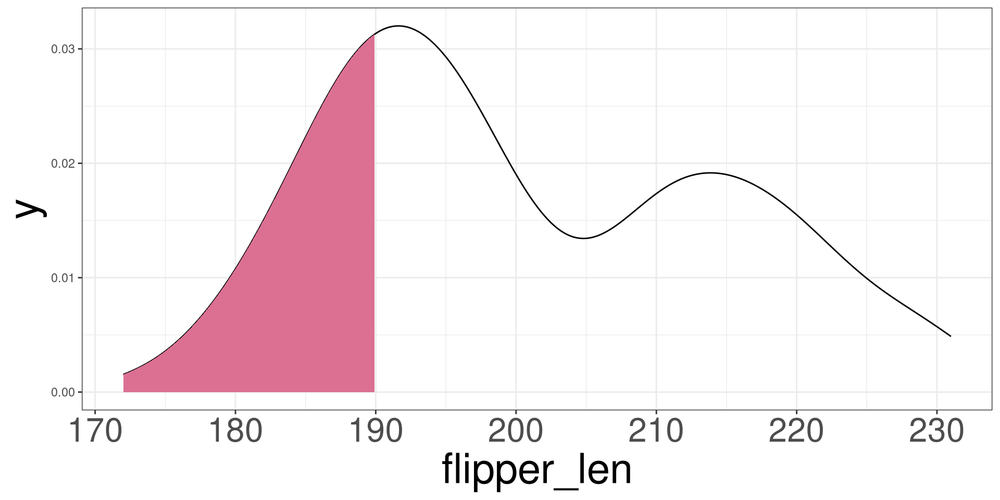Q2 - Median (\(\tilde{x}\))
Q2 is the value signifying that half of the data (50%) is below it.
The median also represents the central tendency of the data.
Q3
Q3 is the value signifying that 3 quarters (75%) of the data is below it.
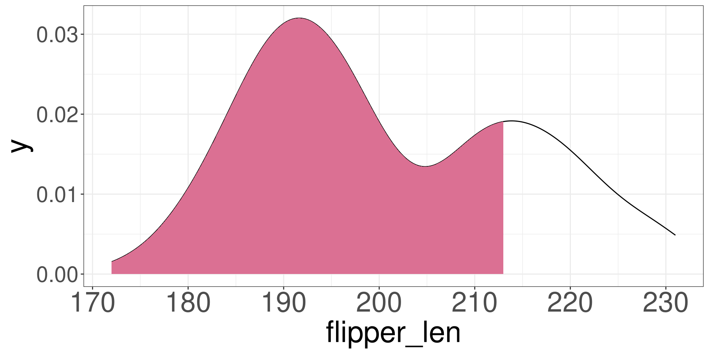Interquartile Range
\[ IQR = Q_3 - Q_1 \]
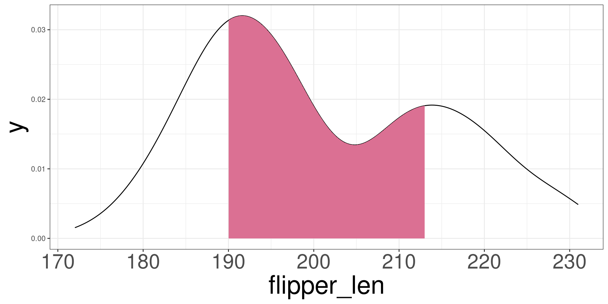Range
\[ R = \mathrm{max} - \mathrm{min} \]
How to identify the quartiles?
- Sort the data
- ID Max and Min
- Find the amount of data the makes a quarter:
- \(K=N/4\)
- Create 4 groups using the sorted data
- group by data size
- If \(K\) has a decimal, the \(Kth\) value is quartile of each group.
Mean (\(\bar{x}\))
Describe how you will find the mean of these numbers:
#> [1] 18 18 12 18 13Mean (\(\bar{x}\))
The mean is another measurement for central tendency.
\[ \bar X = \frac{1}{n}\sum^n_{i=1}X_i \]
\(n\): total data points
\(X_i\): data points
\(i\): indexing data
\(\sum\): add all from first (bottom) to last (up)
Variance
The variance is a measurement on the average squared distance the data points are from the central tendency.
\[ s^2 = \frac{1}{n-1}\sum^n_{i=1}(X_i-\bar X)^2 \]
Standard Deviation
The standard deviation is a measurement on the average distance the data points are from the central tendency.
\[ s=\sqrt{s^2} \]
Mean vs Median
Mean
\[ \bar X = \frac{1}{n}\sum^n_{i=1}x_i \]
Median
\[ P(X \leq \tilde{X}) = 0.5 \]
Mean vs Median
Mean (blue line) vs Median (red line)

Outliers
These are data points that seem to be highly distant from all other variables.

Numerical Statistics in R
Palmer Penguins
Describing numerical data
Summary Statistics
Numerical Statistics in R
Data Visualization
Skeweness
Scatter Plots
Numerical Statistics in R
R has several built in functions to compute statistics.
Mean
DATA: Name of the data frame (eg:penguins)VAR: Name of the variable to create a plot (eg:flipper_len)
Median
DATA: Name of the data frame (eg:penguins)VAR: Name of the variable to create a plot (eg:flipper_len)
Standard Deviation
DATA: Name of the data frame (eg:penguins)VAR: Name of the variable to create a plot (eg:flipper_len)
Variance
DATA: Name of the data frame (eg:penguins)VAR: Name of the variable to create a plot (eg:flipper_len)
Quartiles
DATA: Name of the data frame (eg:penguins)VAR: Name of the variable to create a plot (eg:flipper_len)
Max and Min
DATA: Name of the data frame (eg:penguins)VAR: Name of the variable to create a plot (eg:flipper_len)
Summary Statistics
DATA: Name of the data frame (eg:penguins)VAR: Name of the variable to create a plot (eg:flipper_len)
Penguins
Data Visualization
Palmer Penguins
Describing numerical data
Summary Statistics
Numerical Statistics in R
Data Visualization
Skeweness
Scatter Plots
Histogram
A histogram is a graphical representation of the distribution or frequency of data points in a dataset. It provides a visual way to understand the shape, central tendency, and spread of a dataset by dividing the data into intervals or bins and showing how many data points fall into each bin as a bar.
Histogram R Code
To change bins:
DATA: Name of the data frame (eg:penguins)VAR: Name of the variable to create a plot (eg:flipper_len)VAL: Numerical value to change the bin width.
Histogram
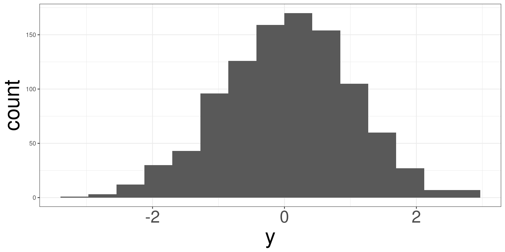Histogram
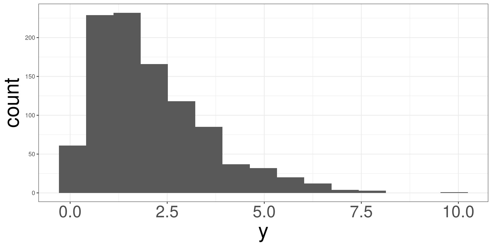Histograms
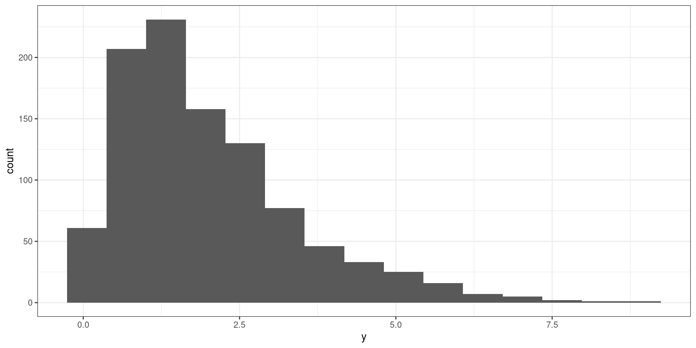Histograms
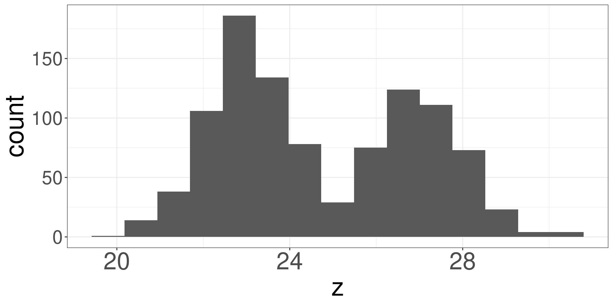Penguins
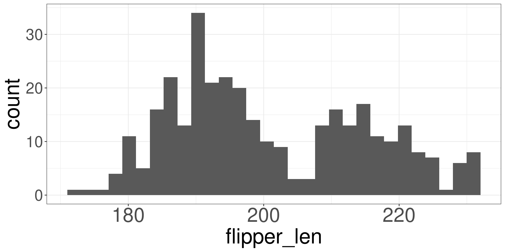Box Plot
A box plot, also known as a box-and-whisker plot, is a graphical representation of the distribution and key statistical characteristics of a dataset. It provides a visual summary of the data’s central tendency, spread, and potential outliers.
Box Plot

Box Plot R Code
DATA: Name of the data frame (eg:penguins)VAR: Name of the variable to create a plot (eg:flipper_len)
Box Plot
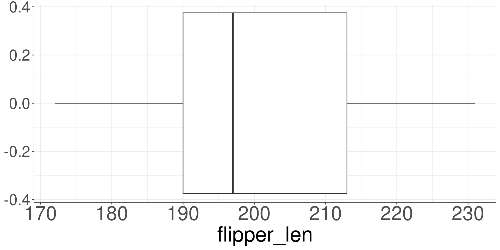Box Plot
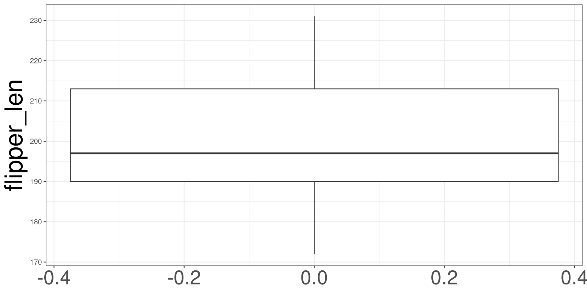Dot Plots
Dot Plots are similar to histograms, but they incorporate dots to count how many data points fall within bins.
Dot Plots in R
To change binwidth
DATA: Name of the data frame (eg:penguins)VAR: Name of the variable to create a plot (eg:flipper_len)VAL: Numerical value to change the bin width.
Dot Plots
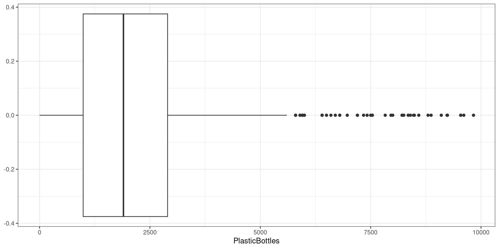Density Plot
Density Plot
A density plot is a way to visualize the distribution of a continuous variable — it shows where data values are concentrated (dense) and where they are sparse via the height of the graph.
Density Plot in R
DATA: Name of the data frame (eg:penguins)VAR: Name of the variable to create a plot (eg:flipper_len)
Density Plot
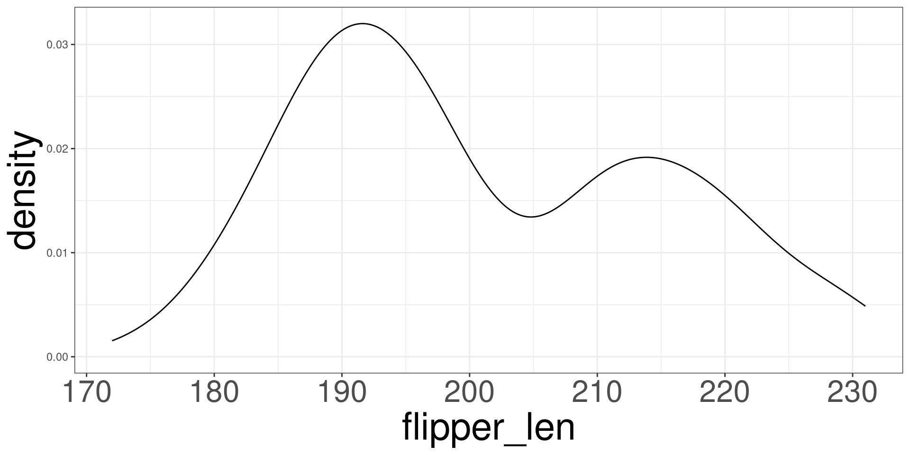Adding Vertical Lines
DATA: Name of the data frame (eg:penguins)VAR: Name of the variable to create a plot (eg:flipper_len)XVAL: Number to place the vertical line (eg:5)
Vertical Lines
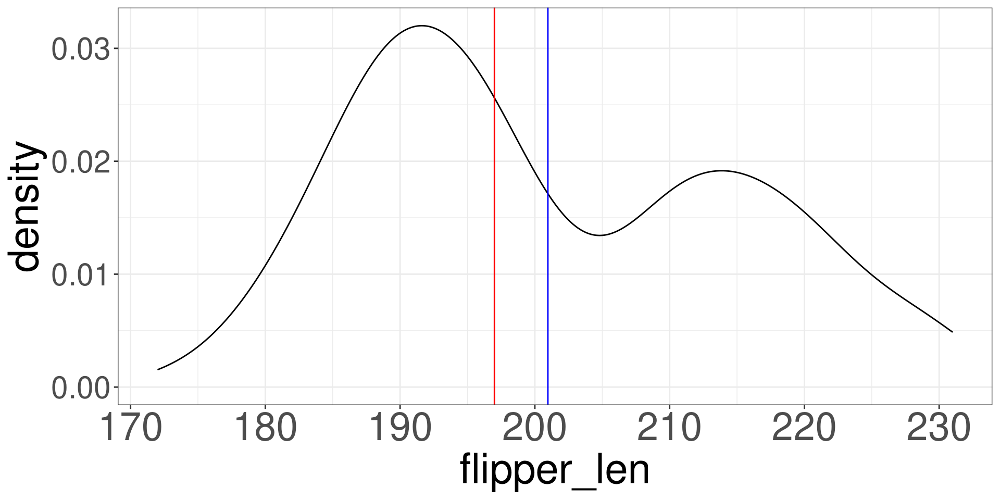Adding Horizontal Lines
DATA: Name of the data frame (eg:penguins)VAR: Name of the variable to create a plot (eg:flipper_len)YVAL: Number to place the horizontal line (eg:2)
Horizontal Lines

Skeweness
Palmer Penguins
Describing numerical data
Summary Statistics
Numerical Statistics in R
Data Visualization
Skeweness
Scatter Plots
Skeweness
Skewness is a statistical measure to determine if unimodal data follows a symmetric distribution, skewed to the left, or skewed to the right.
Symmetric Distribution
A symmetric distribution will look bell shaped and the mean (red line) and median (dashed blue line) will overlap each other.
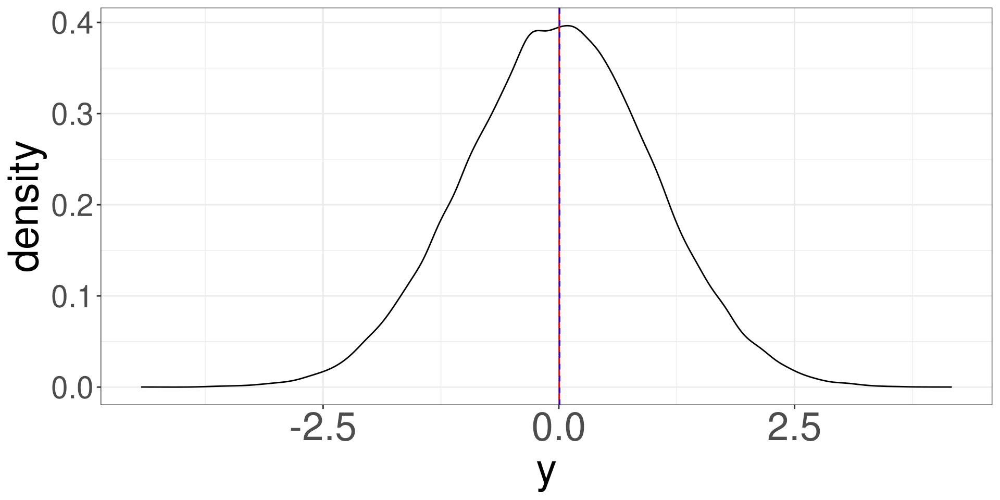Right Skewed Distribution
A right skewed distribution looks asymetric and the mean (red line) is to the right of the median (dashed blue line).
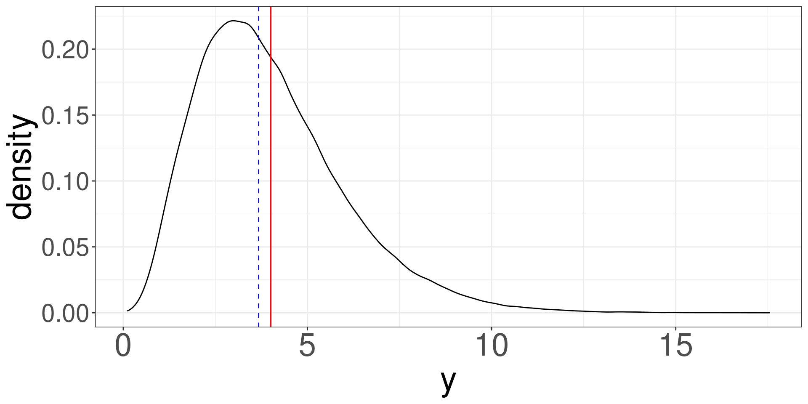left Skewed Distribution
A left skewed distribution looks asymetric and the mean (red line) is to the left of the median (dashed blue line).
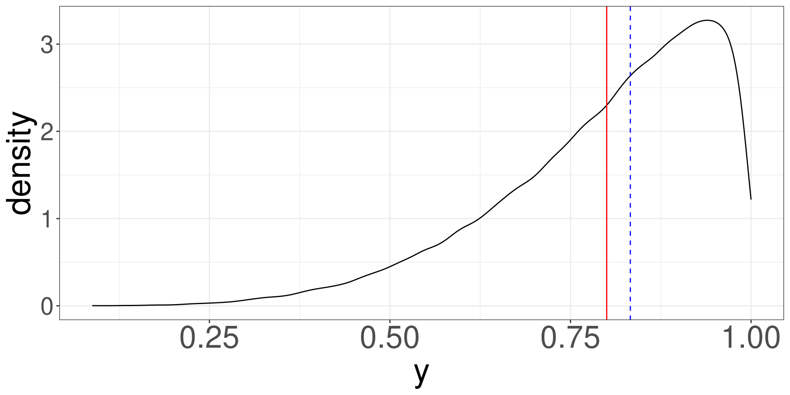Scatter Plots
Palmer Penguins
Describing numerical data
Summary Statistics
Numerical Statistics in R
Data Visualization
Skeweness
Scatter Plots
Scatter Plots
Scatter plots demonstrate how two variables behave with each other. They can tell you any postive or negative trends, if they exist, with the combination of the plots.
Positive Relationship
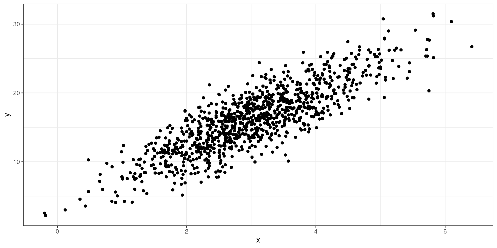Negative Relationship

No Relationship
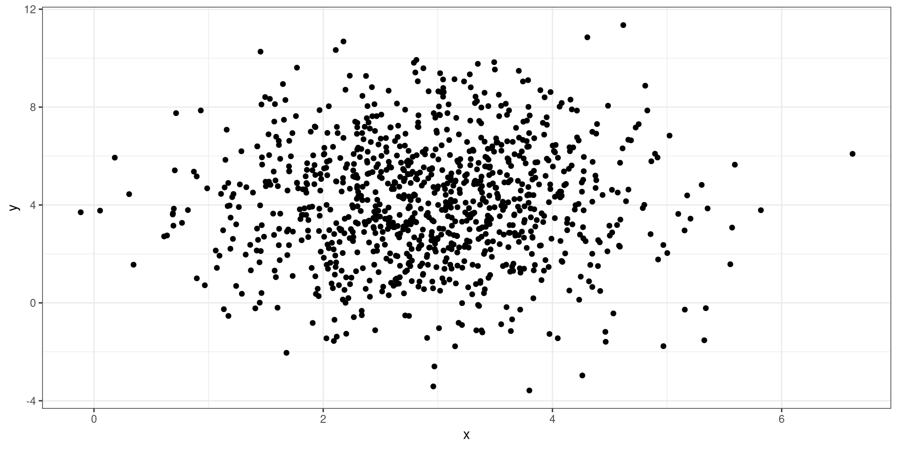Weak Relationship
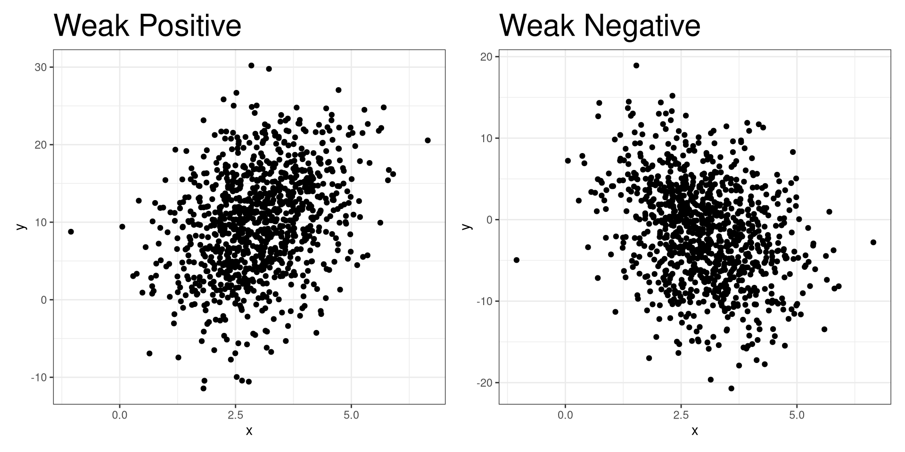Scatter Plots in R
DATA: Name of the data frame (eg:penguins)VAR1: Name of the X variable to create a plot (eg:flipper_len)VAR2: Name of the Y variable to create a plot (eg:body_mass)
Penguins

m201.inqs.info/lectures/3